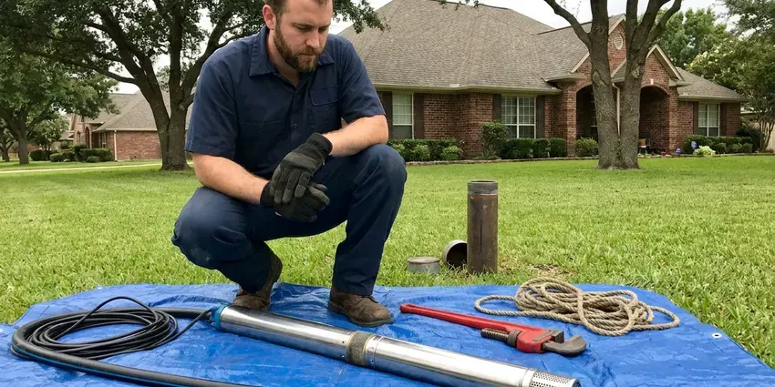

Pipe Replacement in Pasco, WA
Tired of pinhole leaks and rusty water? We provide pipe replacement in Pasco, WA, from a single corroded section to a complete whole-home repipe.
- Durable Materials
- Flexible Repipe Scheduling
- Permits and Inspections Handled
- Small, Planned Wall Openings

Dependable Pipe Replacement Services in Pasco, WA.
Our team is ready to provide a complete inspection and offer the best pipe replacement options for your home.
Pipe Replacement in Pasco, WA for Aging and Leaking Plumbing
FHN Plumbing plans each repipe so most new lines run through the attic and drop down inside walls, which keeps openings small. We pressure test the new system before any drywall is patched and coordinate the city inspection.
Our expertise includes:
- Whole-home repiping with PEX or copper
- Galvanized, polybutylene and pinhole-leak copper replacement
- Cast iron and failing ABS drain line replacement

Additional Plumbing Replacement Services in Pasco, WA
When repairs are no longer enough, our replacement services in Pasco, WA deliver durable upgrades that restore full performance.




Pasco well pump replacement specialists


Customers
Why Choose FHN Plumbing for Pipe Replacement in Pasco, WA?
Our expertise in Pasco, WA plumbing ensures your pipe replacement is handled smoothly and correctly the first time. We use only proven, code-compliant materials for every project.
- Local Expertise, FHN Plumbing understands the specific plumbing codes and challenges in Pasco, WA, ensuring your pipe replacement meets all local requirements.
- Clear Communication, We keep you updated throughout the entire pipe replacement process, from initial assessment to project completion.
- Quality Materials, We use only top-quality, long-lasting materials like PEX and copper, providing a durable and reliable plumbing system for your home.
Citywide Coverage
FHN Plumbing proudly serves every neighborhood and suburb within Pasco for all your pipe replacement needs. Whether you're in an older part of town with galvanized pipes or a newer development, our local teams are ready to respond.
Experienced Team
The FHN Plumbing team has successfully completed many pipe replacement jobs, addressing a wide range of issues from burst pipes to corroded systems. Their expertise guarantees a smooth and efficient process for your home.
Safety-First Approach
Attic lines are insulated and protected from heat and cold, and any exterior PEX is shielded from UV exposure. We test the entire system under pressure before turning on service.
Trusted Certified Pasco Plumbing Services Professionals
At FHN Plumbing, we take pride in providing certified plumbing services throughout Pasco, WA. Backed by recognized industry credentials, our experienced plumbers combine technical skill with genuine customer care. Whether it is repair, installation, or maintenance, we follow strict safety and quality standards to deliver lasting results you can trust.
Call Us Now PHCC Plumbing Contractor Recognition
PHCC Plumbing Contractor Recognition Better Business Bureau (BBB) Accreditation
Better Business Bureau (BBB) Accreditation Angi Certified Pro
Angi Certified Pro ISO 9001 Quality Management Certification
ISO 9001 Quality Management CertificationLong-Lasting Pipe Replacement Services in Pasco, WA
PEX Repiping in Pasco
PEX-A is flexible, resists scale buildup and expands slightly if water freezes, which helps in colder homes. We use expansion fittings that keep the full inside diameter of the pipe for stronger flow. Systems can be run as a home-run manifold with a shutoff for each fixture or as a trunk and branch layout. PEX installs faster than copper with far fewer fittings in the walls. It is our most popular repipe material.

Galvanized Pipe Replacement in Pasco, WA
Many older homes in Pasco, WA still have galvanized steel pipes, which are vulnerable to rust and corrosion on the inside. This leads to reduced water pressure, discolored water, and eventual leaks. FHN Plumbing provides comprehensive galvanized pipe replacement services, removing these failing pipes and installing new, modern materials. Upgrading from galvanized pipes not only improves your water quality and pressure but also protects your home from potential water damage caused by deteriorating plumbing.
Burst Pipe Repair & Replacement in Pasco, WA
Hard freezes are infrequent on the west side of Washington, but short cold snaps catch many homes with uninsulated pipes off guard. Cold snaps can lead to burst pipes, especially in exposed areas or unheated spaces. When a pipe bursts in your Pasco, WA home, it causes immediate water damage and requires urgent attention. Our team provides emergency service to shut off water, remove damaged sections, and replace them with new, more freeze-resistant piping, often PEX, to prevent future occurrences. We work quickly to minimize disruption and water loss.
PEX Pipe Replacement in Pasco
PEX (cross-linked polyethylene) piping has become a popular choice for residential pipe replacement due to its flexibility, affordability, and resistance to freezing. Hard freezes are occasional on the west side of Washington, but short cold snaps catch many homes with uninsulated pipes off guard. Unlike rigid pipes, PEX can expand, reducing the risk of burst pipes during unexpected cold snaps. FHN Plumbing specializes in PEX installation, which often allows for less invasive replacement methods compared to traditional materials. This modern solution offers excellent performance and water quality for your home.
Drain Pipe Replacement in Pasco, WA
Cast iron drain pipe in older homes can rust through at the bottom, while some ABS from the 1980s was made with defective resin that cracks. Signs include sewer odors, slow drains and stains on ceilings below upstairs bathrooms. We camera the line first, then replace accessible sections with PVC or ABS. Under-slab drains can be tunneled, rerouted or lined depending on location. We explain the options with the camera footage in hand.
Corroded Pipe Replacement in Pasco, WA
Many older homes in Pasco, WA still have galvanized steel pipes, which are prone to internal corrosion over time. This corrosion restricts water flow, reduces water pressure, and can introduce rust particles into your drinking water. Our pipe replacement service targets these corroded sections, replacing them with new, non-corrosive materials like PEX or copper. This restores proper water flow and ensures clean, clear water throughout your home.
Polybutylene Pipe Replacement in Pasco
Gray polybutylene pipe was installed in many homes from the late 1970s into the mid-1990s. It breaks down from the inside when exposed to chlorinated water, and fittings can crack with no warning. Some insurers raise premiums or decline coverage on homes that still have it. We remove polybutylene supply lines and replace them with PEX-A or copper. A completed repipe can also help when listing the home.

Water Line Replacement vs. Repair in Pasco, WA
Deciding between pipe repair and full replacement depends on several factors, including the age of your pipes, the extent of the damage, and the frequency of past issues. A small, isolated leak might be repaired, but widespread corrosion or multiple leaks usually warrant replacement. FHN Plumbing provides honest assessments in Pasco, WA, explaining the pros and cons of each option. We help you make an informed decision that offers the most cost-effective and durable solution for your home.
Pipe Replacement Near Me in Pasco, WA
A nearby team also means faster response if a leak shows up before your scheduled repipe. We can patch the urgent problem and fold it into the larger project. Call us for a straightforward, written estimate.
If you are searching for pipe replacement near me, you want a local plumber who knows how homes in your area were built. FHN Plumbing serves Pasco with repipe crews who understand slab foundations, attic routing and local inspection requirements. We can often inspect and quote within a few days.
FHN Plumbing at a Glance
- Licensed and insured plumbers serving Pasco, WA
- Same-day appointments and 24/7 emergency response
- Upfront, flat-rate pricing before work begins
- 4.9-star rated by 382+ Washington customers
Pasco Map
Pasco Information
- Population
- 80,038
- Area codes
- 509/208/541
- Service area
- Pasco and communities within 40 miles
- Nearby
- Kennewick, Richland, Yakima, Wenatchee
Slab foundations, hard water and aging galvanized, polybutylene and thin copper lines make planned pipe replacement a sensible upgrade for homes in Pasco, WA.
Expert Services
Trust our professionals for reliable FHN Plumbing solutions in Pasco, WA.
Our Specialized Plumbing Services in Pasco, WA
At FHN Plumbing, we provide a complete range of plumbing services across Pasco, WA. From leak detection to full system installations, our team ensures fast, precise, and affordable service for both residential and commercial properties. Explore our core services below:


How Our Pipe Replacement Process Works in Pasco, WA
Our pipe replacement process in Pasco, WA is designed to be careful, transparent, and minimally invasive. We aim to restore your plumbing system quickly and effectively.
Request a Quote
Call (425) 491-3131 and tell us about leaks, pressure or water color problems. We schedule an on-site inspection.
Inspect and Plan
We identify your pipe materials and map routes through the attic and walls. You get a detailed quote with materials, timeline and patching plan.
Replace and Test
We install the new lines, pressure test the system and pass inspection. Then we patch openings and clean up.
Frequently Asked Questions About Pipe Replacement in Pasco
A whole-home PEX repipe for a typical single-story home generally costs $5,000 to $12,000, while copper repipes and larger homes can run $10,000 to $18,000. Replacing a single section or branch line often costs $500 to $3,000. We give a written price after inspection.
Yes, significant plumbing work like whole-home re-piping or major section replacement in Pasco usually requires a plumbing permit from the local building department. This ensures the work meets local codes and is correctly inspected. FHN Plumbing handles all necessary permit applications and inspections as part of our service.
Common signs include frequent leaks, low water pressure, discolored or foul-smelling water, banging noises in the walls, and visible corrosion on exposed pipes. If you notice any of these issues in your Pasco home, it's wise to have your plumbing system inspected.
Common signs include frequent leaks, low water pressure, discolored or rusty water, banging noises in your pipes, and a sudden increase in your water bill without explanation. If your home has galvanized steel or polybutylene pipes and is over 40 years old, it's a smart move to have them inspected.
While minor repairs might be attempted by experienced DIY enthusiasts, full pipe replacement is a complex job that should be left to licensed professionals. Incorrect installation can lead to expensive leaks, water damage, and code violations. Our Pasco plumbers have the tools, training, and experience to do the job correctly.
Most openings are small, often six by twelve inches, at each fixture location. Routing through the attic keeps the number of openings low, and patching is included in our quote.
We install PEX-A from brands like Uponor and Rehau, plus Type L copper. Both are code approved and made to last for decades.
Constant moisture west of the mountains promotes mold, rot and corrosion around leaks, so small drips should not be ignored. Temperature swings cause pipes to expand and contract, leading to stress and potential leaks. Hard freezes are infrequent on the west side of Washington, but short cold snaps catch many homes with uninsulated pipes off guard. Older, less flexible pipes are especially susceptible to bursting during hard freezes, making durable and properly installed replacement pipes crucial for homes in Pasco, WA.
What People Are Saying About Our Plumbing Experts?

James P.
Our commercial plumbing system had a leak under the sink, and FHN Plumbing handled it professionally. The plumbers arrived quickly and restored everything without disruption to our customers.
Commercial Plumbing · Yakima, WA
Emily R.
I called FHN Plumbing for plumbing repair, and the technician was fast, polite, and thorough. They explained the problem clearly and fixed it the same day. I will definitely hire them again. Highly recommended!
Plumbing Repair · Spokane Valley, WA
Laura S.
I scheduled a water heater replacement, and the team made the process smooth and affordable. The new unit works perfectly, and they cleaned up after completing the job.
Water Heater Replacement · Pasco, WA
Patricia H.
We had a slab leak that two other companies could not find. FHN Plumbing located it in under an hour, explained our options, and the price matched the quote to the dollar.
Slab Leak Repair · Spokane, WA
Daniel K.
A pipe burst at 11 pm and they actually answered. The plumber showed up within the hour, shut everything down, and had us back to normal the next morning. Could not ask for more.
Emergency Plumbing · Richland, WASofia M.
Two new toilets installed in one visit, no mess left behind, and the tech even adjusted a faucet he noticed was dripping. Fair pricing and really friendly.
Toilet Installation · Spokane, WA